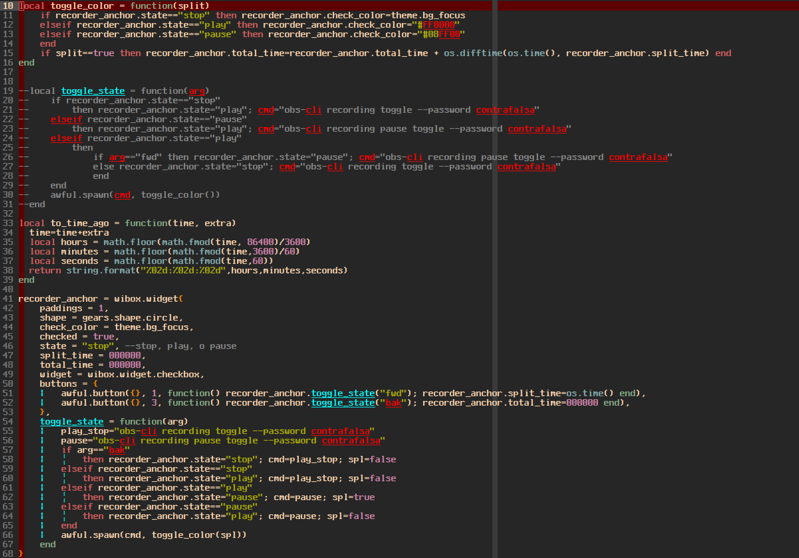
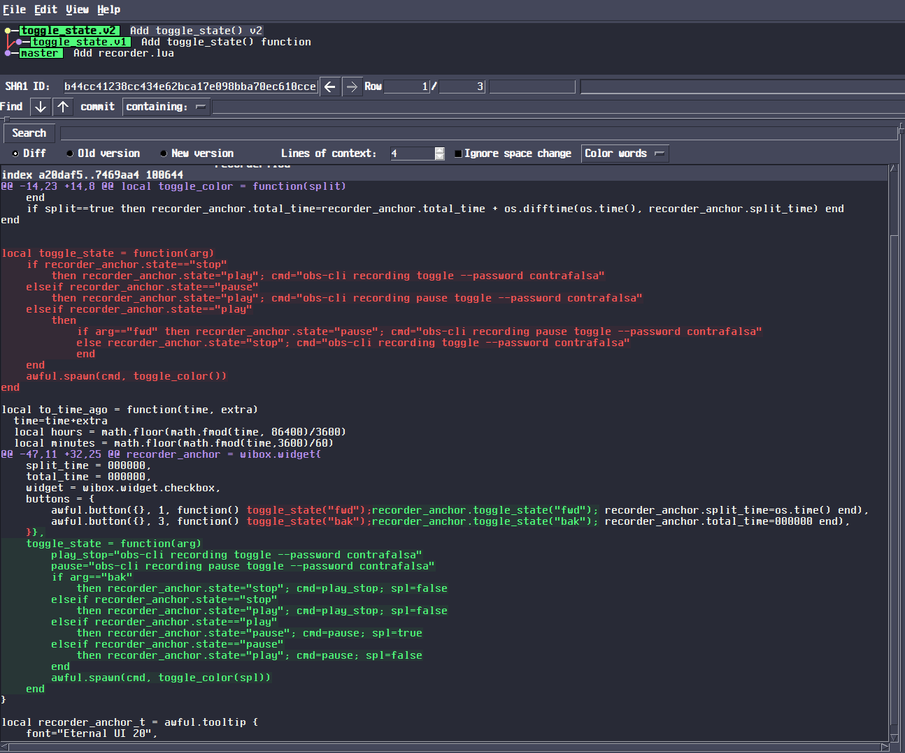
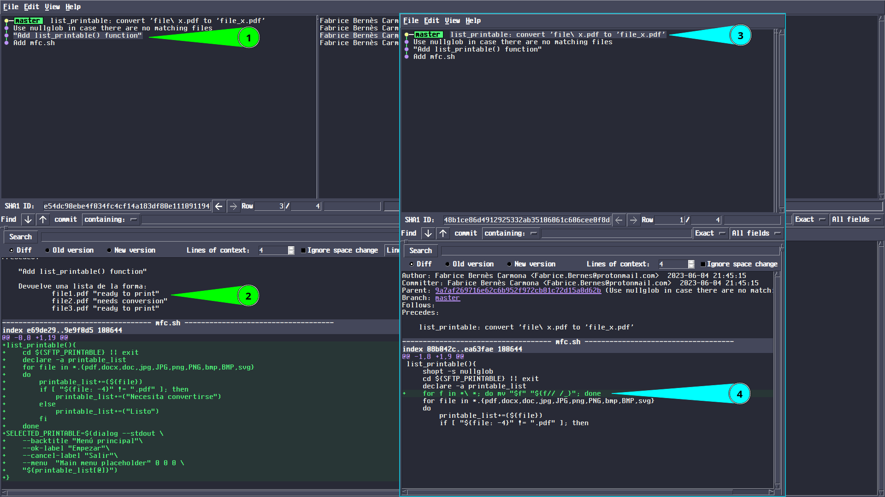

git 1 - Para qué y por qué usar git - Thu, Jun 1, 2023
Sobre la idea de usar un programa para control de versiones. En particular git.
La clase de inconvenientes que se arreglan con git
Cambios experimentales, varias versiones de lo mismo
A veces, cuando se está trabajando en algo (sobre todo código, pero también pasa con textos en general o con esquemas, o con cualquier trabajo que se tenga que replantear constantemente), tenemos que hacer cambios que no estamos seguros de que se van a quedar, o que provocan conflictos con otras partes del trabajo.
Lo que yo hacía antes cuando tenía problemas como esos, era crear una copia de mis archivos, y hacer y probar cambios en ella. El problema con eso, es que después hacía una copia de la copia, y luego una copia de esa última, y si me arrepiento de lo que estaba probando, ponía todo en un directorio, hacía una copia de él, y trabajaba sobre ella.
Al final tenía un espacio de trabajo como este:
.
├── antes_de_S
│ ├── asdflkj.py
│ └── script.py
├── script_BUENO.py
├── script_ESTETALVEZ.py
├── script_MALO.py
├── script_MEGUSTA.py
├── script_ORIG2.py
├── script_ORIG.py
└── script_ORIG.py.bak
2 directories, 9 files
Son 9 archivos para un script. Todos muy parecidos (demasiado como para distinguirlos a ojo), pero cada uno con sus defectos. Los nombres no ayudan, y si dejo de trabajar en ellos por un tiempo, seguramente voy a olvidar qué estaba planeando hacer con ellos.
Otra cosa que hacía, y que todavía encuentro en mis archivos de configuración viejos, es comentar cosas que quiero mejorar. Eso hace que todo sea menos claro y da problemas cuando sólo comento algo parcialmente o cuando comento grupos de cosas que están relacionadas entre si. Al final es muy difícil entender qué grupos de líneas se deben comentar/descomentar al mismo tiempo.
En esta imagen se puede ver un ejemplo de algo como eso:

La función toggle_state() que definí en las líneas 19 a 31 no me gustó.
Por eso está comentada y vuelta a definir en las líneas 54 a 67,
pero si quisiera probar la versión comentada, no basta con
descomentar un grupo y comentar el otro, sino que además tendría que cambiar las
líneas 51 y 52 porque el alcance (scope) de la función es distinto en ambas versiones.
Hacer un nuevo par de líneas debajo de la 51 y 52 con el código apropiado para la
otra versión de toggle_state() es aún más problemático, porque
cuando haga lo mismo para alguna otra función, tendré que saber qué combinación de
comentarios hay que cambiar para revertir la versión de una de las dos funciones sin
mezclar.
Con git podemos tener versiones distintas de un mismo proyecto de una forma que no cree confusión, y que permita cambiar entre ellas de una manera ordenada, o comparar diferencias y crear parches con instrucciones para pasar de un archivo a otro, legibles tanto para un humano, como para la computadora. En la siguiente imagen se muestra de forma exagerada cómo se puede tratar el problema de la imagen anterior usando git:

Lo que hice fue crear dos ramas, una con cada versión de la función, y luego
mostrar un diff entre el primer commit de cada rama.
Para reemplazar la función, basta con quitar las palabras marcadas con rojo, y
agregar las palabras marcadas con verde.
No es necesario hacer eso a mano. En este caso, bastaría con correr
git checkout toggle_state.v1 para usar la versión original.
En realidad ese tratamiento es excesivamente complicado, pero lo hice así para omitir detalles.
Cuando usemos git de verdad, no tendremos que hacer una nueva rama cada vez que
queramos cambiar alguna definición. Siempre podemos revertir nuestros cambios o mezclarlos sin
usar ramas.
Evitar comentarios tontos
A veces agrego comentarios redundantes y que a nadie le sirven, porque tengo miedo de no entender la utilidad de las líneas que escribo. Me refiero a comentarios inútiles como:
list_printable(){
# Debe devolver una lista de la forma:
# file1.pdf "ready to print"
# file2.pdf "needs conversion"
# file3.pdf "ready to print"
# use nullglob in case there are no matching files
shopt -s nullglob
for f in *\ *; do mv "$f" "${f// /_}"; done # Convierte file\ x.pdf en file_x.pdf
cd ${SFTP_PRINTABLE} || exit
declare -a printable_list
for file in *.{pdf,docx,doc,jpg,JPG,png,PNG,bmp,BMP,svg}
do
printable_list+=(${file})
if [ "${file: -4}" != ".pdf" ]; then
printable_list+=("Necesita convertirse")
else
printable_list+=("Listo")
fi
done
SELECTED_PRINTABLE=$(dialog --stdout \
--backtitle "Menú principal"\
--ok-label "Empezar"\
--cancel-label "Salir"\
--menu "Main menu placeholder" 0 0 0 \
"${printable_list[@]}")
}
Las primeras 5 líneas del cuerpo de la función distraen un poco cuando se leed las demás.
La última de esas líneas está en inglés porque viene de una sugerencia que tomé de stackoverflow
(no recuerdo exactamente de qué pregunta, pero la encontré buscando
cómo crear arreglos con nombres de archivos),
y el comentario de la línea 22 debería ser obvio para alguien que escribe en bash.
Yo lo puse porque sin él tal vez me detenga un rato en esa línea antes de seguir leyendo.
Tanto comentarios que explican cosas obvias como aquellos que describen el funcionamiento de un pedazo de código se pueden esconder agregándolos como commit messages.
Si hubiera escrito ese pedazo de código como parte de un repositorio, entonces tendría algo más compacto y agradable a la vista:
list_printable(){
shopt -s nullglob
for f in *\ *; do mv "$f" "${f// /_}"; done
cd ${SFTP_PRINTABLE} || exit
declare -a printable_list
for file in *.{pdf,docx,doc,jpg,JPG,png,PNG,bmp,BMP,svg}
do
printable_list+=(${file})
if [ "${file: -4}" != ".pdf" ]; then
printable_list+=("Necesita convertirse")
else
printable_list+=("Listo")
fi
done
SELECTED_PRINTABLE=$(dialog --stdout \
--backtitle "Menú principal"\
--ok-label "Empezar"\
--cancel-label "Salir"\
--menu "Main menu placeholder" 0 0 0 \
"${printable_list[@]}")
}
Y podría ver mis explicaciones y comentarios revisando mi historial de commits:

La imagen de arriba tiene muchos detalles que por ahora no nos interesan, pero en ella resalto que hay un commit llamado Add list_printable() function (1 verde), con un mensaje (2 verde) que tiene la explicación que anteriormente era un comentario, y un commit list_printable: convert ‘file\ x.pdf’ to ‘file_x.pdf’ (3 azul), cuyo diff muestra claramente qué línea se encarga de cambiar espacios por guiones bajos (4 azul). Así, tenemos un código mucho más limpio, pero al mismo tiempo conservamos todas nuestras notas,y además ahora están en orden cronológico.
Otras ventajas
Un código limpio y con una lista de cambios y adiciones en orden cronológico, así como la capacidad de revertir cambios por más grandes que sean, sin perder nada, hacen que conforme uno se acostumbra a llevar un control de versiones, sea más fácil crear proyectos grandes pero estructurados en secciones pequeñas y fáciles de entender.
Incluso si no nos tomamos la molestia de planear una estructura general o escribir pseudocódigo, pensar en el commit message que tendrán las líneas que estamos escribiendo, hace que el código no sea tan desastroso.
Además, git está pensado para permitir que varias personas trabajen en un mismo proyecto, cada quién a su ritmo, y unificar el trabajo de todos cada vez que se requiera, o dejar que alguien trabaje en grandes cambios sin interrumpir al resto, a menos que alguien esté interesado en incluir esos grandes cambios antes de que sean oficiales. Todo esto sin crear basura o desorden en los directorios de trabajo de cada quién.
El propósito de esta guía
Casi todas las guías que he visto sobre cómo usar git son para gente que se dedica a
la programación, o bien son tan estrictas o específicas, que es difícil empezar a
usar git para trabajo personal.
Por eso voy a hacer una serie de notas con mi forma de usar git, en la que menciono
los errores que suelo cometer, las prácticas que no me gusta seguir, y los detalles que
las guías avanzadas ignoran, así como las confusiones que he tenido al seguir guías para
principiantes o para usos específicos.